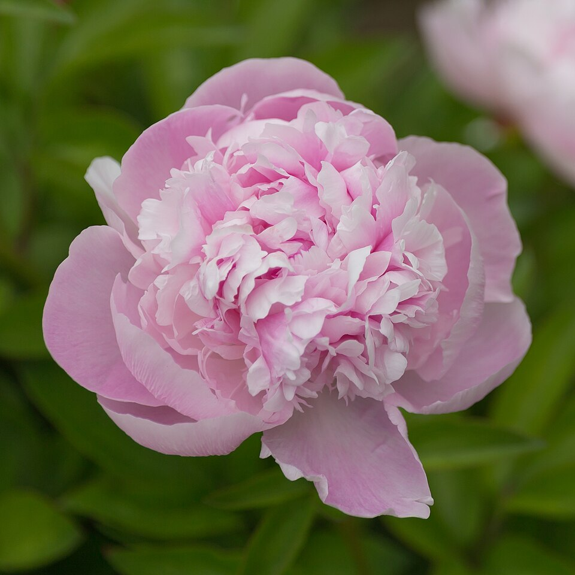
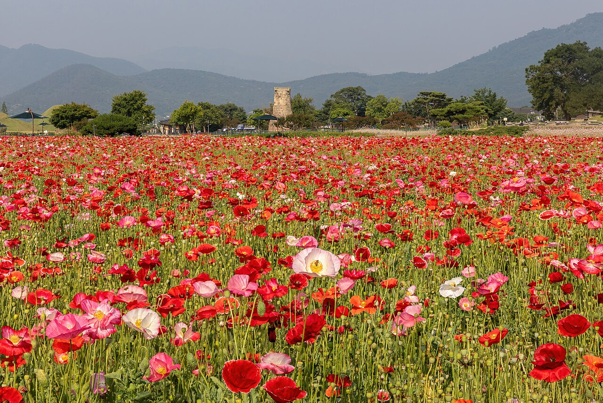
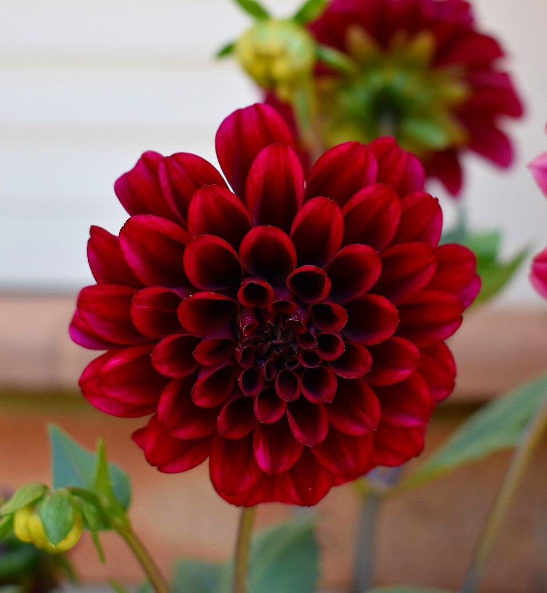
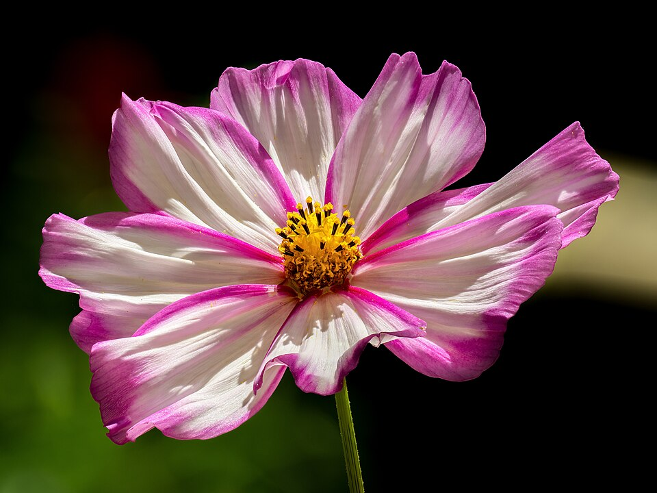

Меня зовут Екатерина. Уже много лет собираю коллекцию многолетников, участвую в выставках и встречаюсь с садоводами на Аптекарском рынке и мероприятиях Клуба цветоводов Москвы.
Я не продаю «на поток» — каждое растение проходит через мои руки: от подбора сорта до доращивания перед передачей в ваш сад. Если вам нужна консультация по посадке, сочетанию или уходу — напишите или позвоните, обсудим лично.
Редкие и проверенные многолетники, которым можно доверять в саду
Каждое растение подбирается вручную — без массового ассортимента
Растения готовятся к пересадке: крепкая корневая система и здоровая зелень
Помогу подобрать растения под ваш участок, свет и стиль сада
Полный перечень — в разделе «Ассортимент». Наличие уточняется лично: состав коллекции меняется вместе с сезоном.



Листайте, чтобы увидеть больше
Расскажу о наличии, условиях содержания и помогу составить подборку для вашего сада. Связаться можно по телефону, в WhatsApp или Telegram.